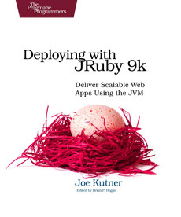

Fahad Al-kubaisi Student @Le Wagon London
| Beginning Ruby, 3rd Edition Learn the principles behind object-oriented programming and within a few chapters create a fully functional Ruby application. You'll also gain a basic understanding of many ancillary technologies such as databases, XML, web frameworks, and networking - some of which are needed as part of a fully functioning |
|
|  | Deploying with JRuby 9k Deploy using the JVM's high performance while building your apps in the language you love. This book introduces you to three JRuby deployment strategies that give you the performance and scalability you need, while you use a language designed for rapid development. Explore common deployment scenarios |
| Ruby Recipes Solve your Ruby programming problems that occur during your day-to-day scripting work. This book contains a varied selection of practical and interesting code recipes designed to make your coding life easier. Ruby Recipes includes solutions to problems in working with data, handling exceptions, writing |
This page has been coded during the FullStack program @LeWagon. That was probably the best experience of my entire life.